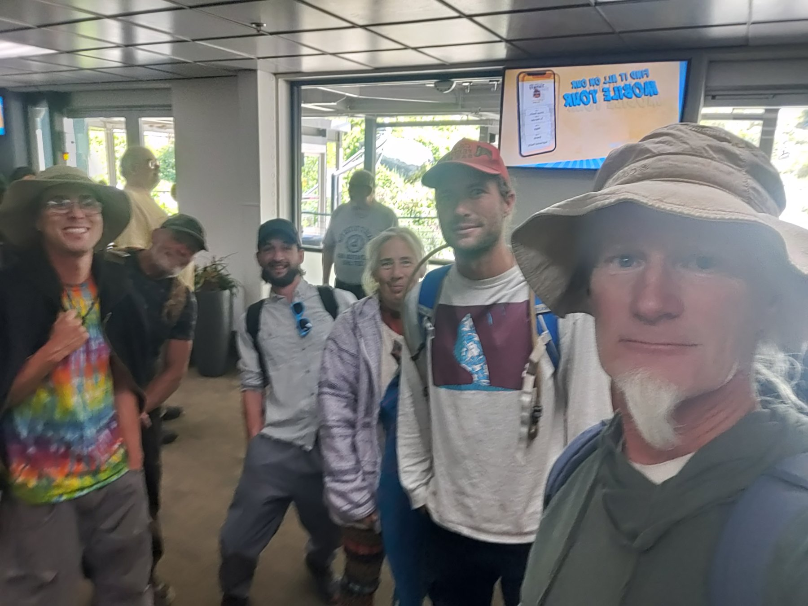
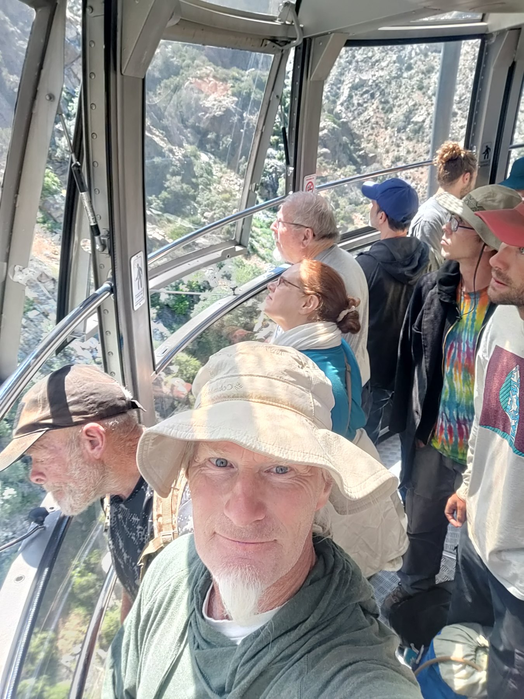
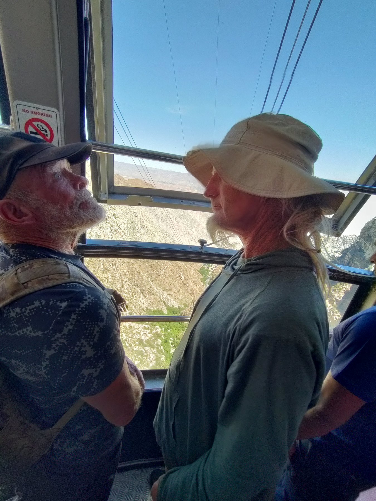
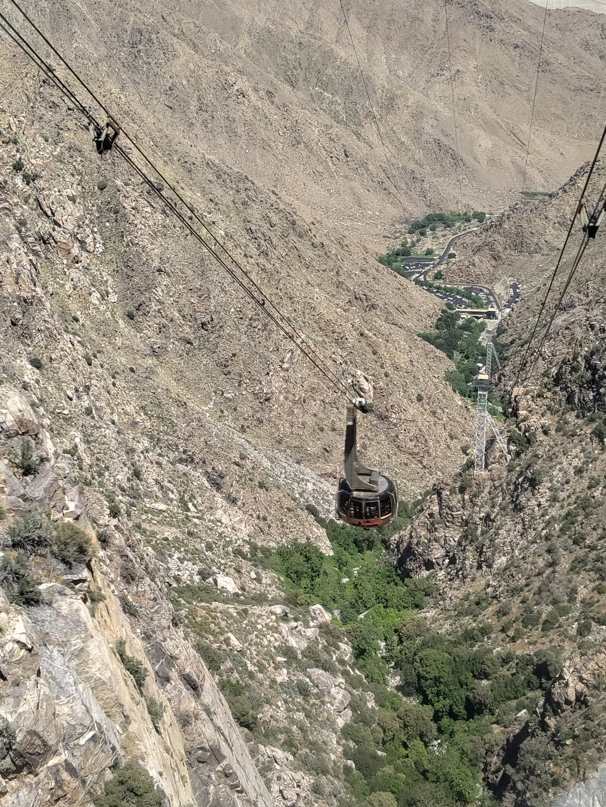
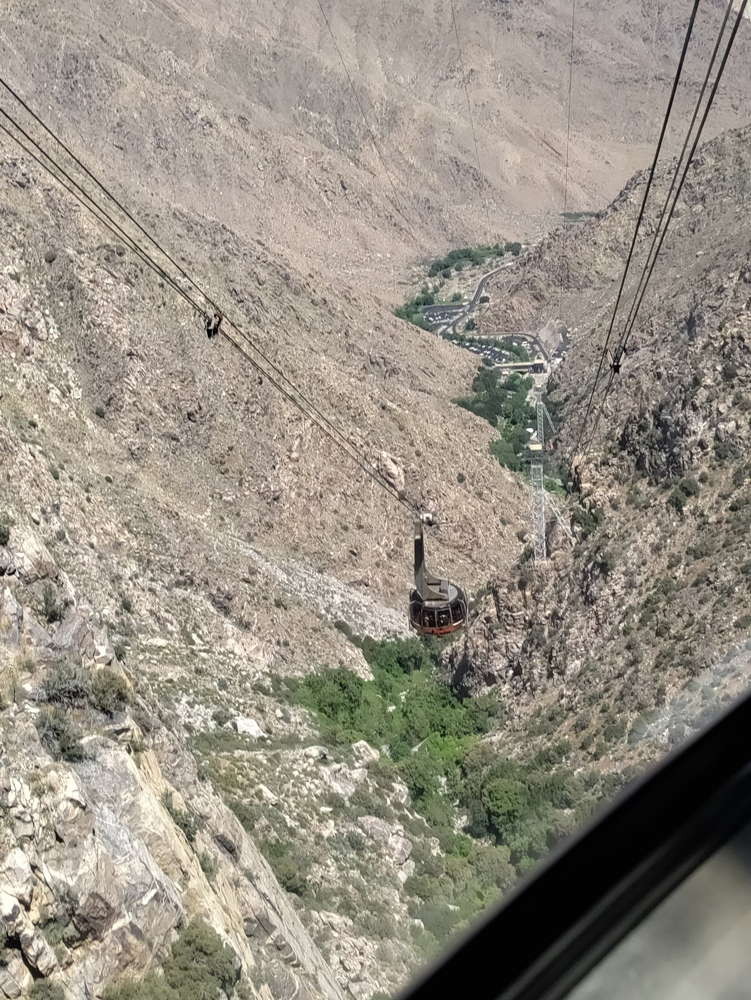

Community Field Trip · April 15, 2026
Mount
San Jacinto
A day in the high country
Once a month, the Boulder Gardens community chooses somewhere beyond the sanctuary to explore together. This trip took the group up Mount San Jacinto, with complimentary tram tickets making it possible for everyone to ride together.

Beyond the Sanctuary
Getting out together
Every month the group decides together on a field trip: somewhere to get out of town, experience a different landscape, and spend time with one another outside the normal rhythm of projects and responsibilities at Boulder Gardens.
For the April outing, the destination was Mount San Jacinto. Everyone in the group had complimentary tickets for the Palm Springs Aerial Tramway, so the ascent itself became part of the shared experience.
The photographs here begin with the group gathering at the tram, looking out through the windows, and watching the desert terrain fall away below. More photographs from the day can be added as they are found in the archive.





Archive note: this page is designed to grow. Additional Mount San Jacinto photographs can be folded into the story later without changing the Community Field Trips structure.